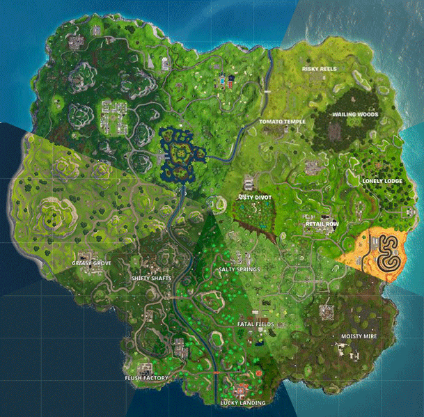

The Evolution of Fortnite
Explore the journey of Fortnite from its initial release to becoming one of the biggest games in the world.
Key Milestones
- July 2017 - Fortnite Launch: Epic Games releases Fortnite with its original mode, "Save the World," where players fend off zombie-like creatures and defend objects with fortifications they can build.
- September 2017 - Battle Royale Release: Epic introduces the free-to-play "Battle Royale" mode, which quickly surpasses the original game in popularity.
- March 2018 - Mobile Launch: Fortnite expands to mobile devices, significantly increasing its player base.
- April 2018 - Cultural Phenomenon: The game's popularity peaks with high-profile celebrities and streamers like Ninja playing Fortnite, reaching over 600,000 concurrent viewers on a Twitch stream with Drake.
- 2018 - Pioneer of Cross-Play: Fortnite becomes one of the first games to offer full cross-play support across PC, consoles, and mobile, revolutionizing player interaction.
- December 2018 - Introduction of Creative Mode: Creative mode is launched, allowing players to design and build their own islands, games, and battle arenas.
Transformative Updates
- Seasonal Changes: Each season, Fortnite introduces new themes and mechanics, keeping the game fresh and engaging with new skins, challenges, and storylines.
- Building Mechanics Overhaul: Building mechanics have been refined to allow players to construct complex structures more smoothly and swiftly during combat.
- Advanced Movement Mechanics: Recent updates have introduced enhanced movement mechanics such as mantling and sprinting, enhancing players' ability to navigate the environment and leverage the terrain tactically.
Fortnite's Global Impact
Fortnite's impact on gaming culture is immense, influencing other games and becoming a staple in esports and popular media.
